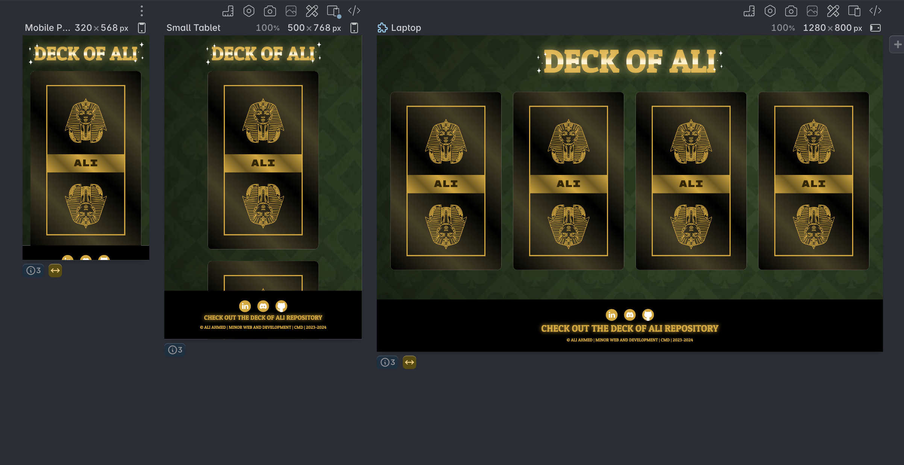

What is Polypane?
Polypane allows users to create and test responsive websites by providing the ability to view the site simultaneously on different screen sizes and devices. This is especially useful for optimizing the user experience across various devices, such as desktops, tablets, and smartphones.
One of the unique features of Polypane is its built-in support for various web technologies and standards, making it easy for developers to work with modern tools and frameworks. Additionally, it offers powerful tools for analyzing performance and accessibility, enabling developers to improve the quality of their websites.
(My own site)
What is Polypane?
One of the key points that Valkhof emphasizes is that browser makers are listening to the needs of developers and implementing functionalities that previously had to be built manually. Modern browsers can now perform many tasks that were previously attributed to JavaScript, but faster and more accessibly.
Valkhof highlights the importance of reusing code and reducing research time for web developers. He encourages developers to first check if there is already a built-in solution available when building new functionalities, instead of relying on JavaScript.
The Rule of Least Power
In his argument, Valkhof emphasizes the importance of applying the basic principle of "the rule of least power" when building web technologies. This principle advises choosing the least powerful language suitable for a particular purpose. He argues that JavaScript, although powerful, is also vulnerable and delicate. By writing clear HTML, many functionalities can be achieved without the need for JavaScript.
Browser Makers Listen and Implement
One of the key points that Valkhof emphasizes is that browser makers are listening to the needs of developers and implementing functionalities that previously had to be built manually. Modern browsers can now perform many tasks that were previously attributed to JavaScript, but faster and more accessibly.
Efficient Code Reuse
Valkhof highlights the importance of reusing code and reducing research time for web developers. He encourages developers to first check if there is already a built-in solution available when building new functionalities, instead of relying on JavaScript.
Custom Toggles (Switches)

In-page Transitions
In-page transitions can be used to create smooth transitions when a user scrolls through a page. This can be achieved using the `scroll-behavior` CSS property. As a result, the page scrolls smoothly to the desired position, providing an improved user experience without needing JavaScript.
💡 Reflection
Personally, I am glad that we are becoming less dependent on JavaScript. Not that I don't appreciate JavaScript, but logic is not my strong suit. The rise of selectors like selectlist and custom toggles makes it much easier for me as a designer to keep track of the available functionalities. I certainly plan to make use of this. However, I still find it important to master JavaScript. In my opinion, it is still more powerful than CSS and offers additional functionality.